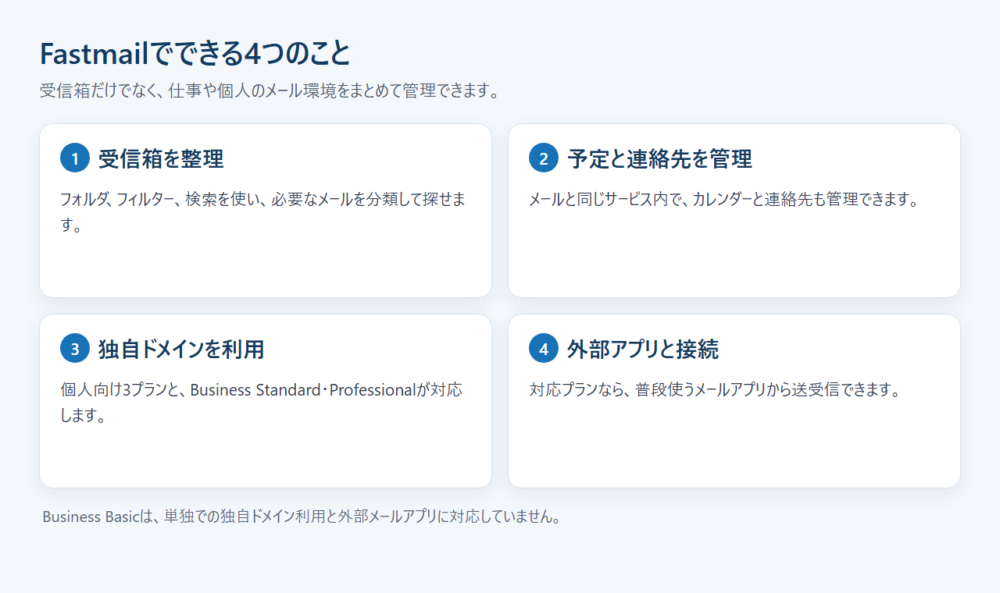
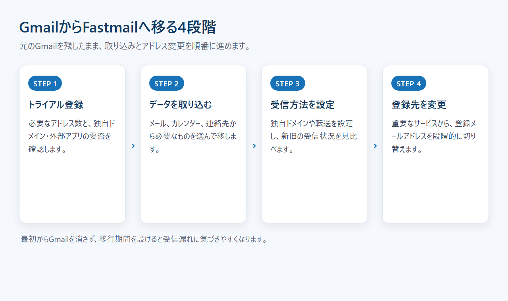

Fastmailとは？料金・機能・日本語対応とGmail・Proton Mailとの違いを解説
Fastmailは、個人・家族・仕事用のメールを管理できる有料サービスです。広告なしの受信箱や独自ドメインが魅力ですが、無料のGmailから乗り換える価値があるのか迷う人もいるでしょう。
料金と主な機能、日本語対応、Proton Mailとの違いまで順に紹介します。
Fastmailとは？広告なしで使える有料メールサービス
Fastmailとは、メール、カレンダー、連絡先をまとめて使える有料のメールホスティングサービスです。
- サービス：メール／カレンダー／連絡先
- 無料枠：常設なし／最長30日間の試用あり
- 独自ドメイン：Basic以外のプランで対応
- 日本語：Web画面は一部対応
- 向く人：広告なしや複数アドレスを重視する人
メールやカレンダーの概要と、カード不要の無料トライアルの入口を確認できます。
Fastmailが向いている人・向いていない人
個人向けプランまたはBusiness Standard以上なら、独自ドメインと外部メールアプリを使えます。無料とGoogle連携を優先する人はGmail、Proton内の暗号化を重視する人はProton Mailも候補です。
Fastmailでできること：メール整理から独自ドメインまで
Fastmailでは、受信箱の整理に加えて、カレンダーや連絡先も同じサービス内で管理できます。独自ドメインと複数アドレスを使い分けたい人なら、候補に入ります。

受信箱をフォルダ・フィルター・検索で整理する
Fastmailは、フォルダ、フィルター、検索を備えています。フィルターで受信先を分け、必要なメールは検索から探せます。ただし、転送ルールは無料トライアル中には使えません。
カレンダーと連絡先をメールと一緒に管理する
Fastmailの契約には、メールだけでなくカレンダーと連絡先も含まれます。Gmailから移る場合は、3種類のデータを選んで取り込めます。
独自ドメインと複数アドレスを使い分ける
Individual、Duo、Family、Standard、Professionalは独自ドメインに対応します。名前用、問い合わせ用、登録用など、目的別にアドレスを分けたい人向けの構成です。
Business Basicは、単独では独自ドメインを使えません。ただし、StandardまたはProfessionalの管理者が1人いれば、Basicの利用者も共有ドメインでアドレスを作れます。
外部のメールアプリから送受信する
対応プランなら、普段使っている外部メールアプリと接続できます。外部メールアプリを使いたい人は、Web画面だけに縛られずに済みます。
Business Basicは外部メールアプリに対応しません。費用だけでBasicを選ぶと希望の使い方ができないため、契約前に注意が必要です。
独自ドメイン、複数アドレス、カレンダーなど、利用目的に合う機能があるかを見比べられます。
Fastmailのプライバシーと安全性で知っておきたいこと
Fastmailは、利用料で運営される有料メールサービスです。ただし、Proton Mailと同じ暗号化方式を前提に選ぶサービスではありません。
広告を表示しない有料モデル
Fastmailは広告なしのメールを掲げています。利用料がメールサービスを支える形です。
広告の有無と、第三者がメール本文を読めるかどうかは別の話です。プライバシーを比べる際は、事業モデルと暗号化方式を分けて考えます。
通信・保存時の保護とアカウント防御
通信はTLS 1.3を含むTLSで保護され、保存データは暗号化ディスクに置かれます。二要素認証は認証アプリとセキュリティキーに対応し、SMSを予備手段として登録できます。
復旧用メール、電話番号、復旧コードも設定可能です。二要素認証を有効にしたアカウントは、復旧に成功した後も24時間の待機時間があります。
Proton Mailの暗号化とは同じではない
Proton利用者間では、本文をエンドツーエンドで暗号化します。受信箱の本文と添付ファイルには、ゼロアクセス暗号化も使われます。
通常の外部宛メールは、Proton Mailから送る場合も初期状態ではエンドツーエンド暗号化されません。FastmailとProton Mailのどちらを選ぶ場合も、すべてのメールが同じ方法で暗号化されるわけではありません。
Fastmailの料金と30日間の無料トライアル
Fastmailに常設の無料プランはありません。個人向けはIndividual、Duo、Family、ビジネス向けはBasic、Standard、Professionalから選びます。
1人・2人・家族で選ぶ個人向け3プラン
- Individual：1人・60GB
- Duo：2人・合計120GB
- Family：最大6人・合計最大360GB
日本からは円建てで契約できます。月払いと年払いで金額が変わるため、契約前に料金ページで確認します。
容量と機能で選ぶビジネス向け3プラン
- Basic：1人6GB。独自ドメインと外部メールアプリは単独利用不可
- Standard：1人60GB。独自ドメインと外部メールアプリに対応
- Professional：1人150GB。メール保持アーカイブを追加
日本円では、1ユーザーあたり月払い620〜1,550円、年払い5,580〜16,740円です。複数人で使う場合は、利用者ごとにプランを混在できます。
無料トライアルで試せる範囲と制限
無料トライアルは最長30日で、カード登録は不要です。試用中には、送信数や一部機能に制限があります。
個人・家族・ビジネス向けの現行プランと、30日間トライアルの申込条件を確認できます。
Fastmailの日本語対応・日本からの支払い・解約
Web画面は日本語に切り替えられますが、一部は未翻訳です。公式サイト、ヘルプ、個別サポートは英語で、日本からの契約は円建てに対応しています。
Web画面は一部日本語に切り替えられる
Web版は「Settings」から表示言語に日本語を選べます。英語だけの受信箱ではありませんが、画面の一部には未翻訳箇所が残ります。
Fastmailの公式サイトとヘルプは英語です。申込前に日本語で見られる範囲と、英語で読む必要がある範囲を分けておくと判断しやすくなります。
日本語サポートはなく問い合わせは英語になる
問い合わせ窓口はメールとフォームです。通常24時間以内の返信が案内されていますが、登録画面、ヘルプ、個別サポートは英語のみです。
翻訳ツールを使ったやり取りが負担なら、日本語の有人サポートがあるサービスも比較しておきたいところです。
日本円の支払い方法と請求書
日本向け料金ページは円・税込表示です。販売と請求はPaddleが担当し、Visa、Mastercard、American Expressなどのカードに対応します。Apple Pay、Google Pay、PayPalも選べます。
JCBは公式の対応一覧に記載がありません。支払い後はPaddleから請求書がメールで届き、Paddleのサイトから再発行を依頼できます。
この請求書は支払い済みの証憑です。後払いの請求書払いや銀行振込には対応していません。税務上の扱いは契約形態で変わるため、必要に応じて税理士に確認してください。
解約後は請求期間の末日まで使える
解約は「Settings」の「Billing & Plan」から手続きできます。解約後も現在の請求期間が終わるまでは利用でき、満了前なら解約を取り消せます。
未使用期間の返金はありません。複数人のアカウントを閉じる場合は、自分以外の利用者を先に削除する必要があります。
Fastmail・Gmail・Proton Mailの違い
無料とGoogle連携を優先するならGmailが候補です。独自ドメインと外部メールアプリを使うならFastmailの個人向けまたはStandard以上、無料枠とProton内の暗号化を重視するならProton Mailを比べます。
FastmailとGmailの違い：広告・Google連携・独自ドメイン
個人向けGmailは無料で、15GBをGoogleドライブ、Gmail、Googleフォトで共用します。日本語UIと日本語のヘルプ記事があり、Googleの各サービスをまとめて使う人には便利です。
Fastmailには常設の無料枠がなく、広告なしのメールと独自ドメインに料金を払う設計です。メール環境をGoogleの保存容量やアカウントから分けたい人に合います。
Gmail系のサービスで独自ドメインを使う場合、比較対象はGoogle Workspaceです。Workspace Starterは独自ドメインのメールと、1人あたり30GBのプールストレージを含みます。
FastmailとProton Mailの違い：無料枠・暗号化・外部アプリ

無料のProton Freeでは、メールアドレス1件を使えます。開始チェックリストを18日以内に終えると、メール容量は500MBから1GBへ増えます。無料枠では独自ドメインを使えません。
Proton利用者間のメールと、受信箱の本文・添付ファイルには強い暗号化が採用されています。外部アプリから使うProton Bridgeは有料Mailプラン限定で、モバイルとPOP3には対応しません。
Fastmailの個人向けプランとBusiness Standard以上では、独自ドメインと外部メールアプリを使えます。Proton Mailも、通常の外部宛メールは初期状態ではエンドツーエンド暗号化されません。
3サービスの選び分け
- Gmail：無料とGoogleサービスの連携を優先する
- Fastmail：個人向けまたはStandard以上で独自ドメインと外部アプリを使う
- Proton Mail：無料枠とProton内・受信箱の暗号化を重視する
広告なしのメールや独自ドメイン、外部アプリ連携が必要かを機能ページで見比べられます。
GmailからFastmailへ移るときの流れ
移行は、トライアル登録、データの取り込み、独自ドメインや転送の設定、登録先アドレスの変更という順で進めます。元のGmailはすぐに消さず、しばらく併用する方が安全です。

無料トライアルを登録する
まずはカード不要の無料トライアルを登録します。試用中に、必要なアドレス数と、外部メールアプリや独自ドメインの要否を確認し、候補のプランを絞ります。
SMS認証を求められる場合があります。認証しないと、IMAPやPOPで受信できないなどの制限がかかることがあります。
メール・連絡先・カレンダーを取り込む
「Settings」から「Migration」「Import」の順に進み、「Gmail / Google Workspace」を選びます。Googleにログインした後、メール、カレンダー、連絡先から必要なデータを選んで取り込めます。
独自ドメインや転送を設定する
独自ドメインを使う人は、Fastmailで受信するための設定を行います。旧アドレスをすぐには止めず、両方の受信を見ながら切り替えると確認漏れを減らせます。
Business Basicは単独で独自ドメインを使えないため、個人向けプランまたはStandard以上を選びます。
登録先メールアドレスを段階的に変更する
メールを取り込んでも、銀行、EC、業務サービスなどに登録したアドレスは自動では変わりません。重要なサービスから順に、新しいアドレスへ変更します。
旧アドレスの受信を続け、変更漏れがないかを見直した後に移行を終えます。インポートとは別に、登録先の変更も進める必要があります。
Fastmailの評判から分かるメリットと注意点
公開レビューでは、メール整理、独自ドメイン、メール環境をGoogleから分けられる点が選定理由に挙がっています。一方、料金と英語サポートは契約前に見ておきたい条件です。
良い評判：整理しやすさ・独自ドメイン・Google依存の分散
利用者からは、大量のメールを削除・移動するときの動作や、フィルターによる整理を評価する声があります。独自ドメインを持ちながら、Google Workspaceの付帯機能を増やさずに済む点も選ばれる理由です。
Googleアカウントにメール、ファイル、写真を集めている人からは、メールだけ別の環境へ移すことに価値を感じる声も見られます。機能の多さより、依存先を分けたい人に響く評価です。
気になる評判：有料・英語サポート・暗号化の違い
常設の無料プランがないため、無料Gmailで困っていない人には費用が増えます。有人サポートも英語のみで、日本語で問い合わせたい人には負担です。
プライバシーを重視して選ぶ場合は、広告なしという方針だけで決められません。Proton Mailのエンドツーエンド暗号化との違いも踏まえると、どこまで守りたいかが選ぶ基準になります。
まとめ：広告なし・独自ドメインを重視するならFastmailが候補
Fastmailは、広告なしの受信箱を使いたい人に合います。個人向けまたはBusiness Standard以上なら、独自ドメインと外部メールアプリにも対応します。
- Fastmailを試す：対応プランで独自ドメインと外部アプリを使う
- Gmailを続ける：無料とGoogleサービスの連携を優先する
- Proton Mailも比べる：無料枠とProton内・受信箱の暗号化を優先する
カード不要の30日間トライアルから、メール、カレンダー、独自ドメインの利用条件を確かめられます。